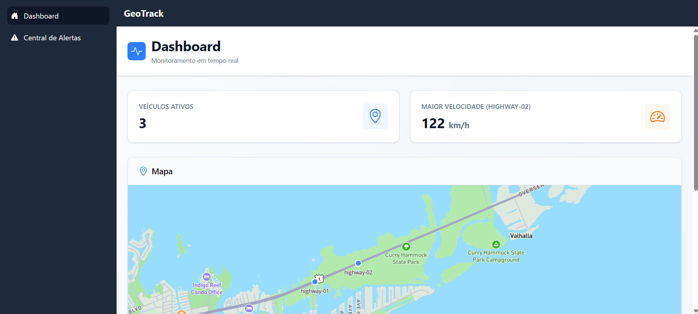

Olá, sou
João Vitor Dreer
Desenvolvedor Web Junior com 1 ano de experiência, atualmente aprofundando os estudos em arquitetura de software e infraestrutura de sistemas.
Tecnologias
Experiências
Minha trajetória profissional e acadêmica até o momento.
Desenvolvedor Júnior
Lapaza Empreendimentos LTDAAtuação no desenvolvimento web full-stack de ponta a ponta, participando desde a modelagem de APIs robustas até a integração de dados em tempo real e a garantia de qualidade por meio de testes automatizados.
- Desenvolvimento e otimização da interface visual do portal web corporativo focado em empresas.
- Refatoração arquitetural e modernização visual de sistemas legados para melhorar a manutenção e usabilidade.
- Integração eficiente de APIs proprietárias para consumo de dados e renderização dinâmica na interface do usuário.
- Criação e manutenção de APIs RESTful utilizando frameworks modernos de alto desempenho.
- Desenvolvimento de soluções integradas a sistemas embarcados com tecnologia de geolocalização e GPS de alta precisão.
Faculdade Engenharia de Software
UnifilFoco no desenvolvimento do pensamento analítico e na base científica necessária para construir sistemas robustos. Atuação acadêmica voltada ao estudo de algoritmos eficientes, modelagem estruturada de projetos e conceitos matemáticos que dão suporte à arquitetura de software escalável.
Estudo Autodidata
AluraMeu ponto de partida no desenvolvimento de software. Adotei uma postura autodidata para explorar diferentes ecossistemas (do front-end à infraestrutura), entendendo como cada tecnologia resolve problemas específicos e consolidando uma alta capacidade de aprendizado rápido.
Projetos
Alguns dos projetos e aplicações que desenvolvi.

Geotrack
O GeoTrack é uma infraestrutura de backend e dashboard projetada para receber, processar e visualizar coordenadas geográficas de milhares de veículos simultaneamente.